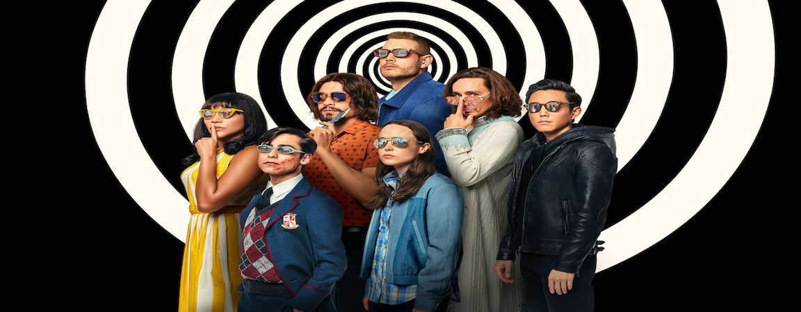

The Characters
Sir Reginald Hargreeves

Reginald is an alien disguised as a wealthy entrepreneur and world-renowned scientist. He received the Nobel Prize for his work in the cerebral advancement of the chimpanzee and founded the Umbrella Academy, a group of adopted super-powered children. Sir Reginald is cold-hearted, often mistreating and even experimenting on the children for his personal interests. He refuses to let the children call him father, demanding that they address him by his codename The Monocle instead. When speaking to the children, he refers to them by number, which was assigned to the children in terms of usefulness, and has nothing to do with their actual destructive capabilities.
Luther Hargreeves

Luther is the primary and longest-lasting member of the Umbrella Academy. Luther's principal powers are super-strength and durability. Reginald Hargreeves injected a gorilla serum into Luther to save his life, turning Luther into a half-gorilla, half-human. His body can withstand the vacuum and cold of space as long as he has a helmet on. Using his super strength, he primarily fights hand to hand. After his career with The Umbrella Academy, he moved to the moon and lived at the Annihilation.
Diego Hargreeves

Diego is the reckless and rebellious member of the group, as described by Reginald Hargreeves. His main ability in the comics allows him to hold his breath indefinitely. He also has a strong talent for knife-throwing (he can change the direction of projectiles in midair; also, though it has not been explored, he may be able to use mild telekinesis) and close-quarter combat. He and Luther have a clear rivalry, and Diego is often unwilling to take orders from Luther.
Allison Hargreeves

Allison is the third member of the Umbrella Academy. Described as narcissistic, she has the ability to manipulate reality by lying, using the phrase "I heard a rumor..." to activate the power. After her career with The Umbrella Academy, she married her boyfriend, Patrick, and had a daughter named Claire. The couple has since divorced, and Patrick has full custody of their daughter, due to Allison using her special ability on Claire. She has a cybernetic left hand as Dr. Terminal devoured her original hand when she was a child. In "Dallas", when she goes to get vocal surgery, her arm is no longer drawn as if it were mechanical, suggesting that it too had been fixed. During the events of “Apocalypse Suite”, Allison had her throat slit by her sister Vanya (as the White Violin) to prevent Allison from utilizing her power. Saved by Luther, she was able to survive but was told she could never speak again. As a result, she was forced to communicate via a note pad. While she and her family were forced to live in the bunker beneath the academy ruins, Allison tortured the slightly amnesiac and disabled Vanya by forcing Vanya to remember and relive her rampage. After her surgery, however, Allison had felt remorse and empathetic towards her sister, and began to support Vanya in physical therapy.
Klaus Hargreeves

Klaus is the fourth member of the Umbrella Academy. Klaus's powers are speaking with the dead, channeling the dead so they speak through him, possessing people, broadcasting his consciousness through airwaves (allowing him to communicate through TVs), and telekinesis. In the Netflix adaptation, he also has the power of evocation, making spirits corporeal, capable of being seen by others and interacting with objects around them. Of his comic powers, he retains only the ability to speak to the dead in the Netflix adaptation, although he does not require a Ouija board to do so. He is portrayed by Robert Sheehan and Dante Albidone, as an adult and teenager, respectively, in the Netflix adaptation. He has the words "Hello" and "Goodbye" tattooed on his right and left palms, respectively. It has been theorized by Mr. Pogo that Klaus has been doing drugs since he was a teenager. Klaus continues to communicate with his deceased brother Ben.
Unnamed (Number Five)

Number Five is had a name but it was unspoken for so long that all of his siblings, and Five himself, forgot what it was. At the age of 10 (or 13 in the Netflix adaptation), Five disappeared by using his power of time travel to escape into the future. Sir Reginald always warned him that he "could never go back". It took him 45 years to figure out how to go back in time. He aged normally during his time in the apocalypse, but upon returning to the past he regained the appearance he had the day he traveled forwards. His body is stuck in time and cannot age, as medical examinations prove that there are no signs of cell growth or death. In the Netflix adaptation, his body continues to age normally after reverting to its 13-year-old form, as Five bemoans "going through puberty twice." Five claims to have read accounts of the academy's immediate future and their connection to an apocalypse. While trying to go back in time to warn his adoptive brothers and sisters about the apocalypse, he worked with the Temps Aeternalis. He was taught to perform "micro jumps" in time, allowing him to move faster than the eye can see. In the Netflix adaptation, Five has the secondary power of teleportation in addition to time travel and does not have to be taught "micro-jumps". In the comics, he is considered "the perfect assassin," as he has had the DNA of the best killers in history infused into him. He has a 100% chance of killing if he decides to kill. It is revealed in the Dallas storyline that Five and Spaceboy are twin brothers. He also has a puppy named Mr. Pennycrumb.
Ben Hargreeves

Number Six possesses eldritch monsters from other dimensions under his skin (most often appearing as tentacles emerging from his torso). He is deceased from the results of a mission gone wrong. He is portrayed by Justin H. Min and Ethan Hwang, as an adult and a teenager, respectively, in the Netflix adaptation. There is a memorial statue of him located in front of the academy. Even though he has been dead since before the start of the series, he has been portrayed as a member of The Umbrella Academy, appearing as his statue counterpart, in visions, or with Klaus, through his ability to talk to the dead. He can connect with Klaus physically, lending him his ability for a moment. CBR referred to Ben as a Jiminy Cricket type of character as he reminds Klaus of his moral responsibilities even if the troubled Number Four refuses to listen. Ben spirit manifests during the “Hotel Oblivion” storyline, appearing before his brother Klaus in the hospital after saving him from an overdose. It is shown that the portion of his chest that held the monster tentacles is now an empty cavity, and it is hinted by Ben later in the issue that the monster had escaped from its dimension. It is also implied the Hotel Oblivion was not just made to be a supervillain prison, but a trap designed by Hargreeves to contain the beast, with the villains inside meant to be used as bait.
Vanya Hargreeves

Vanya is the most estranged member of the umbrella group, Vanya originally showcases no particular powers other than an interest in music. Vanya is known to have written a book detailing her life with the academy and her decision to leave. According to The Conductor, leader of the Orchestra Verdammten, Vanya is the most powerful member of The Umbrella Academy. In her early childhood, The Monocle suppressed her powers and kept her on medication to maintain this, but her powers were eventually released by The Conductor, driving Vanya mad. She is capable of releasing destructive waves of force using her violin that can be strong enough to cut someones throat or destroy an entire building with a single note. After unlocking her powers, she murders the Conductor and travels to the Hargreeves mansion to destroy it, killing Pogo in the process. During the fight with her siblings, while distracted by Klaus pretending to channel Hargreeves, she is shot in the back of the head by Number 5 with Hargreeves revolver. Doctors noted she would eventually recover from her injuries, but would never play the violin again. The Netflix adaptation differs. It is Allison who shoots at Vanya; though, at the last minute Allison fires the gun next to Vanya ear instead, temporarily deafening her and causing her to lose focus on the sound of her violin and she then passes out. During the Dallas storyline, Vanya is shown in the care of her siblings in the bunker beneath the mansion ruins, partially amnesic and using a wheelchair. She was subject to some abuse by Allison in retaliation for slicing her throat, left bound in front of screens depicting the aftermath of her rampage. At the end of the storyline, Allison has a change of heart and helps her sister recover rather than punishing her. In season 2 of the adaptation, Vanya suffers from amnesia after getting hit by a car upon arrival in 1963 and becomes a live-in nanny for Sissy autistic son Harlan. When Harlan goes missing, Vanya uses powers to discover that Harlan actually drowned in a lake and later is able to resuscitate him by unknowingly transferring some of her power to him.
The Conductor

The Conductor is a villain in The Umbrella Academy: Apocalypse Suite who relentlessly pursued Vanya Hargreeves in the hopes of recruiting her to his orchestra for the purpose of ending the world with a song he had written. The Conductor had found the truth about Vanya powers and brainwashed her into realising them. After turning down the Conductor offers many times, Vanya later agreed to play his song to bring on the apocalypse. While Vanya is playing the song with the orchestra, she kills the Conductor and the rest of the orchestra shortly before using her powers to bring on the apocalypse. Vanya powers devastate the moon sending chunks of it flying back to Earth. However, shortly after this, her brother Klaus managed to utilize his telekinesis to support the largest piece of the moon, preventing numerous and averting the future visited by Number Five.
Dr. Terminal

Dr. Terminal is a villain in The Umbrella Academy: Apocalypse Suite and The Umbrella Academy: Hotel Oblivion. In the past, Terminal was diagnosed with Eisenstein Syndrome, a rare disease that eats a person from the nervous system to the brain. He was given two months to live by doctors, so he created a device that can convert matter into energy that will feed the disease and keep him alive. He then returned to his doctor office and devoured the doctors with his device. He was incarcerated and escaped by absorbing a reporter, the cell bars, all the guards, the prison warden, and the carnations near the front gate. He later kidnapped The Rumor and devoured her left arm before being defeated by Spaceboy. He battled the Umbrella Academy time and time again till he was sent to the Hotel Oblivion by The Monocle. He vowed to return and destroy the world. He also left behind the Terminauts to destroy the Umbrella Academy should they ever reform.
Hazel and Cha-Cha

A pair of extremely violent assassins working for the Temps Aeternalis are named Hazel and Cha-Cha. Many in the agency, including Number Five, consider them the most dangerous team in the history of the agency, mainly for their unpredictable methods. They both wear brightly colored cartoon character masks, exhibit maniacal and psychopathic behavior, and have a love of murder and sugary snacks. After the initial failure of the first team to recapture or neutralize Number Five for defecting, they were called in to take him down. To that end, they managed to capture his brother, The Séance, torturing and eventually killing him, as well as acquiring Sir Hargreeves secret stockpile of nuclear weapons. They die near the end of the “Dallas” story line when The Séance, after returning from the dead, possesses Cha-Cha, kills Hazel, and then himself (as Cha-Cha).
Atlas Jericho "A. J." Carmichael

A. J. Carmichael is a talking goldfish who inhabits a tank atop a human bodysuit. He is the chief authority in charge of the Temps Aeternalis. Carmichael headed the Temps Aeternalis at the time Number Five was inducted into the organization. He oversaw his training as an assassin and his DNA being bonded to that of the most notorious assassins from across history. In The Umbrella Academy: Dallas, Carmichael blackmails Number Five and The Rumor to stop Five past self from stopping the assassination of President John F. Kennedy in 1963. Unknown to them, the assassination had to be ensured so that Kennedy would never meet Sir Reginald Hargreeves and hand over nuclear missiles to him. These missiles would be detonated by Hazel and Cha-Cha and destroy the world in the Temps Aeternalis own attempt to apprehend Number Five. Carmichael explained the scope of their mission success after President Kennedy had been assassinated and the Umbrella Academy were returned to the present. Number Five then attacked and killed Carmichael out of revenge for what he had done to him, eating the goldfish alive.
Dr. Phinneus Pogo

Pogo is a talking male chimp associated with The Monocle. When growing up at the academy, Spaceboy considered Mr Pogo to be his best friend. He watched most of the academy grow up and knew all of the children very well. He was also a sympathizer of Vanya plight when she is repeatedly told by Sir Reginald that she is not special, as she has no special powers. Despite this, he is murdered by Vanya after her transformation into the White Violin as a test of her power against the academy.
Grace Hargreeves

Grace is a robot designed to be the Umbrella Academy mother. She later malfunctions and “dies” after getting a pot of coffee spilled in her by Number Five. The members of the Umbrella Academy try to fix her but in the end they find her machinery to be much too complicated. In the Netflix adaptation, Grace emotionally cares for the children, even when they return as adults. Diego deactivates her out of mercy as she had been malfunctioning badly. However, Pogo reactivates her shortly after, but she is destroyed permanently during the destruction of the academy. In the second season, a human version of Grace appears in 1963 as Reginald love interest, implying that the robot was based on her.
The Handler

The Handler was a high-ranking member and major influencer of the Temps Commission. She was frequently seen dealing personally with matters concerning Number Five and the apocalypse, despite not being the case leader. The Handler had a clear agenda in her belief that time should not be changed, going to extreme lengths to maintain the timeline and ensure nothing is changed. She is also the adoptive mother of Lila Pitts, having assassinated the girl biological parents to take Lila for herself. The Handler is almost killed at the end of season one after being shot in the head by Hazel, and is actually killed by the Swede at the end of the second season.
Leonard Peabody (Harold Jenkins)

As a child, he was an admirer of the Umbrella Academy and begged to join, since he was born on the same day as the result of a normal pregnancy, but was rejected and humiliated by Reginald. He later discovers Reginald diary, detailing Vanya potential, and inserts himself into her life with the goal of manipulating her into discovering her powers and using them against her siblings. After hiring thugs to rough him up in front of Vanya, he loses an eye and the prosthetic eyeball that Five found in the future is revealed to be his after his death. He is killed by Vanya after she discovers his secret but has the potential to reprise the role in season three due to the changed timeline.
Lila Pitts

Lila is introduced as a fellow patient at the mental institution Diego is committed to in 1963. After she and Diego escape the institution, Lila tags along to help Diego stop the apocalypse. However, Five, who does not trust Lila, discovers she is The Handler daughter, and that in 1993, The Handler had Five execute Lila parents so she could take Lila for herself and raise her. She is one of the 43 children born on October 1, 1989, and has the ability to mirror anyone powers.
Raymond Chestnut

Raymond is Allison second husband in the early 1960s. Raymond is an African-American man fighting for civil rights and appears in a main role in the second season of the series.
Sissy Cooper

Sissy Cooper, portrayed by Marin Ireland, is Vanya friend and love interest. She is also Carl wife and Harlan mother. Sissy takes in Vanya after hitting the latter with her car and causing amnesia. She soon begins an affair with Vanya. Sissy appears in the second season of the series in a main role.